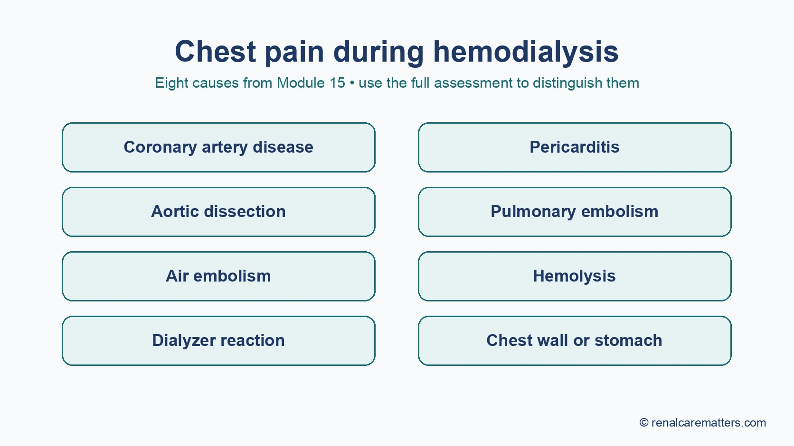
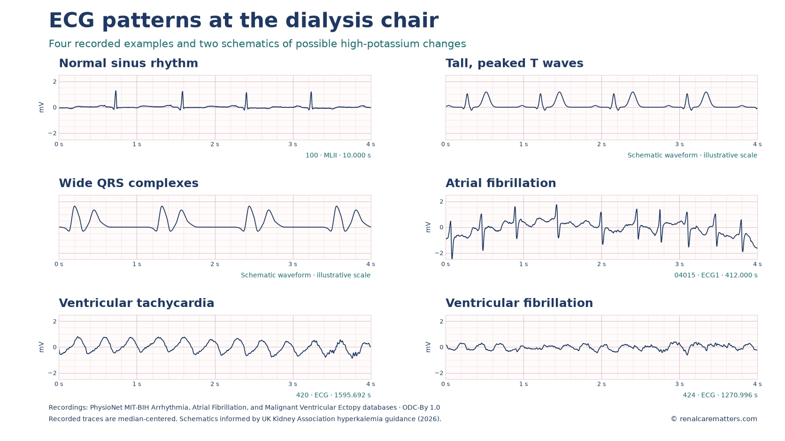
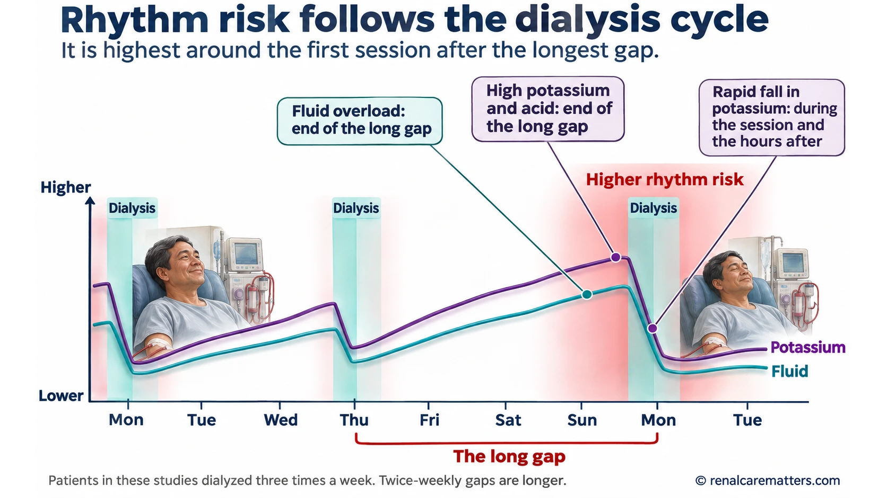
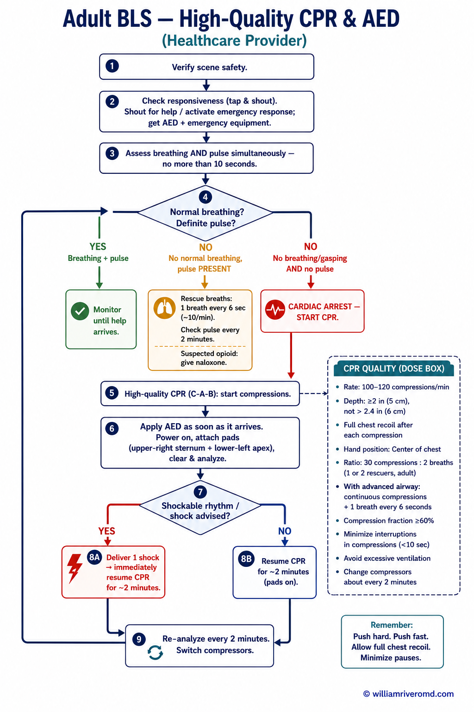
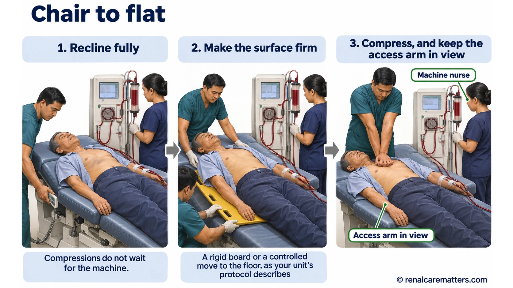
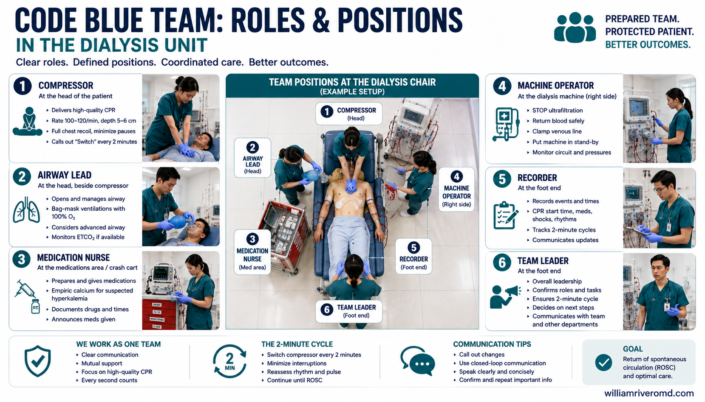
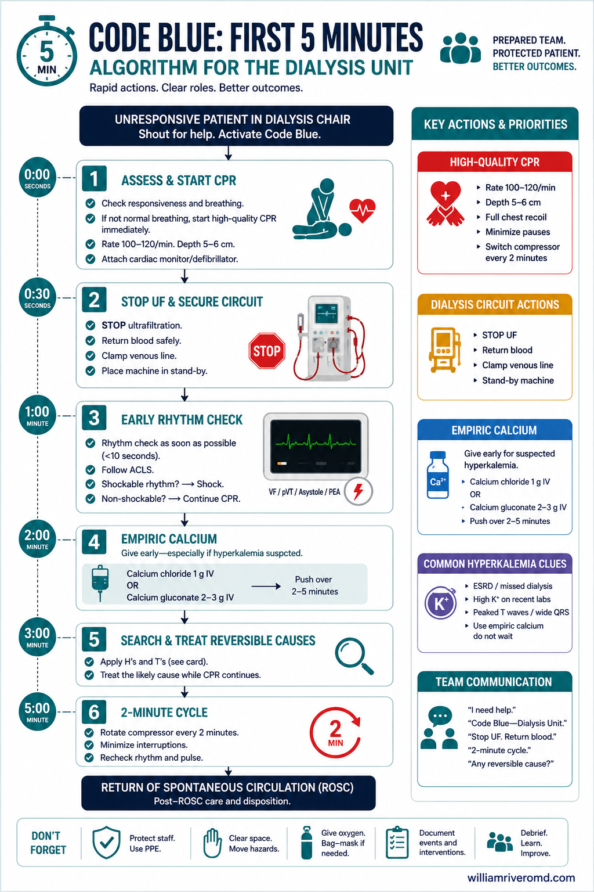
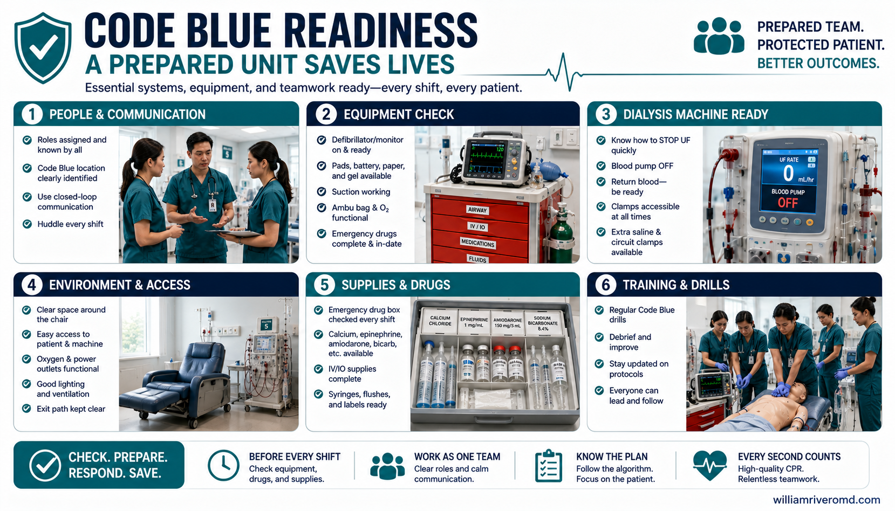

Heart Emergencies in the Chair: Chest Pain, Arrhythmia, and Cardiac Arrest
Sorting chest pain by cause, reading the electrocardiogram in a dialysis patient, and leading resuscitation beside a dialysis machine.
PublishedNailathalaGipatikPepalwal:ReferencesMga SanggunianMga TinubdanReng Reperensya:19Audience: Physicians who cover hemodialysis shifts · attending nephrologists, medical directors, and head nurses who orient themRead timeOras ng pagbasaOras sa pagbasaOras ning pamamasa:
This module is study material for physicians on duty in hemodialysis units. It explains the reasoning behind common decisions; it is not a protocol. At the chairside, follow your unit’s protocol and ask the attending nephrologist for guidance. Doses and cut-off values are set by your unit. Every case is fictional.
Learning objectives
After this module you should be able to
Sort chest pain in a dialysis patient by cause, including the causes that come from the dialysis circuit.
Read a 12-lead electrocardiogram for rhythm, ischemia, and potassium effects, and interpret troponin with caution.
Explain why arrhythmia clusters around dialysis and the long gap, and manage new atrial fibrillation in the chair.
Decide with the attending nephrologist whether to stop dialysis and return the blood, and arrange transfer.
Lead life support beside a dialysis machine, including the chair, the machine, the blood, and the access.
Name the reversible causes special to dialysis, assign team roles, and lead a debrief.
Pre-testBefore you read, answer the 8 self-assessment questions and note your score. After the module, select New set of questions and compare. The difference is what you learned; the questions you still miss are what to reread.
Start here
The big picture, in plain words
In plain wordsThink of the heart as a pump in a house with unreliable wiring. In a dialysis patient the pipes that feed the pump are narrowed. The voltage, which is potassium, drifts up for days and then drops within hours. The tank the pump must empty fills across the gap and is drained in one session. Most heart emergencies in the chair come from the supply, the electricity, or the load.
The picture is useful, and it has limits. The three problems feed each other: a fall in blood pressure starves heart muscle of oxygen, and starved muscle is electrically unstable. Some chest pain in the chair does not come from the heart at all. Air, damaged red cells, and a dialyzer reaction come from the circuit, and they change what you do with the blood.
Figure 1 · Key terms for this module
Acute coronary syndromeSudden loss of blood flow to heart muscle. It includes unstable angina and heart attack.
TroponinA heart muscle protein measured in blood. It rises when heart muscle is injured.
Atrial fibrillation (AF)A fast, irregular rhythm in which the upper chambers quiver and do not contract.
Ventricular fibrillation (VF)A chaotic rhythm of the lower chambers that produces no pulse.
Shockable rhythmVentricular fibrillation or pulseless ventricular tachycardia (VT). A defibrillator shock can stop it.
Cardiopulmonary resuscitation (CPR)Chest compressions and breaths given to a person in cardiac arrest.
Blood returnFlushing the blood in the circuit back to the patient with saline. Staff also call it rinse-back.
Defibrillation-proofA rating given to equipment that can stay connected to a patient during a defibrillator shock.
Opening case · fictional
Case: Palpitations at the end of the long weekend
Mr. Ramon Villanueva, 64, has diabetes and has been on hemodialysis for three years. He dialyzes on Mondays and Thursdays through a left arm fistula. This Monday was a holiday. He spent the long weekend at a town fiesta in his home province and missed his session. He arrives on Tuesday, five days after his last dialysis, 4.8 kilograms above his dry weight. Nurse Liza Manalo draws his blood before dialysis as ordered and starts the session.
Forty minutes later he calls her. “My heart is jumping, and my chest feels heavy.” His pulse is fast and irregular at about 140 per minute. His blood pressure is 100/60 mm Hg. It was 160/90 at the start. He is sweating. Nurse Manalo looks at you and asks, “Doctor, do we stop and return the blood?”
Before reading on, decide:
What do you do in the first two minutes?
Is this the coronary arteries, the potassium, or the dialysis itself, and which tests help you tell?
Do you stop dialysis, and do you return the blood?
Keep your answers in mind. The lesson gives you what you need, and the case review near the end shows one sound response.
Lesson · part 1
Chest pain in the chair: eight causes
When a patient on the machine reports chest pain, your first task is to sort. Two things matter: whether this is dangerous now, and whether the circuit is involved.

Figure 2. Eight causes of chest pain in the dialysis chair. Three of them come from the circuit and not from the patient.
Cause
Why it happens in dialysis patients
Clues at the chair
Coronary artery disease
Very common. Dialysis stresses narrowed arteries
Heaviness, breathlessness, sweating, a pressure drop. Pain may be absent
Pericarditis
Inflammation of the sac around the heart, linked to under-dialysis
Sudden tearing pain that goes to the back. Unequal pulses
Pulmonary embolism
Clot from a leg vein or a catheter
Sudden breathlessness, low oxygen saturation, fast heart rate
Air embolism
Air enters the venous line or an open catheter
Sudden cough, breathlessness, or collapse. Air or foam in the venous line
Hemolysis
Red cells are damaged by faulty dialysis fluid or a kinked line
Chest and back pain. Blood in the lines looks translucent, like red wine. Several patients may be affected
Dialyzer reaction
An allergic-type reaction to the dialyzer or a substance in the circuit
Starts in the first minutes. Itching, wheeze, swelling, flushing, low blood pressure
Chest wall or stomach
Muscle strain, reflux
Diagnosed only after the others are excluded
The first four causes apply to any patient with acute chest pain.1 The next three come from the circuit.2
Why coronary disease is common, and often quiet
Kidney disease speeds up disease of the heart and its arteries.3 A thickened left ventricle and narrowed coronary arteries are very frequent in these patients.4 Thick muscle needs more oxygen, and anemia delivers less. Fluid removal can also lower the pressure that fills the coronary arteries.
The warning signs are often missing. In a United States registry study of 3,049 dialysis patients admitted with a heart attack, 44.4% had chest pain on arrival, compared with 68.3% of patients not on dialysis. Only 19.1% had ST elevation, compared with 35.9%. Nearly half, 44.8%, were first given a diagnosis other than acute coronary syndrome.5 The data are retrospective and date from 1998 to 2000.
RememberIn a dialysis patient, breathlessness, sweating, sudden weakness, or an unexplained fall in blood pressure can be the only sign of a heart attack. Treat these as possible chest pain.
Lesson · part 2
Two tests and their limits: the ECG and troponin
The 12-lead electrocardiogram (ECG) is your fastest test. The American chest pain guideline states that, in any setting, an ECG should be acquired and reviewed within 10 minutes of arrival for acute chest pain, and repeated if symptoms continue. Where an ECG cannot be obtained, it advises referral to an emergency department.1 The 10-minute figure is the guideline’s standard, reported here for reference. It is not a target set by this series. Record the ECG as early as your unit’s protocol allows.
Always compare with an old tracing. A thick left ventricle already produces large voltages and ST changes at rest, so a change from the previous ECG matters most.

Figure 3. Six strips to recognize at the chairside. Read the rate, the regularity, the QRS width, and the T waves in that order.
Figure 4 · A first read in five steps
RateVery fast or very slow.
RegularityAn irregular rhythm with no clear P waves suggests atrial fibrillation.
QRS widthA wide QRS means a ventricular rhythm, a conduction block, or a high potassium.
ST segmentsNew elevation or depression compared with the old ECG.
T waves and QTTall, peaked T waves suggest high potassium. A long QT suggests low potassium, low calcium, or a medicine.
Before dialysis, a high potassium can produce peaked T waves, a wide QRS, and a slow rhythm. Late in a session and afterward, a low potassium can lengthen the QT interval and favor ventricular rhythms. As Module 2 explained, the ECG is an insensitive test for high potassium, so a normal tracing does not exclude it.6
Troponin in kidney failure
In most patients a raised troponin points to an acute event. In dialysis patients it may not. With high-sensitivity tests, most patients with kidney failure have a troponin above the usual upper limit even when they are well.7 These chronic elevations are thought to reflect underlying heart disease more than slow clearance by the kidneys, and they predict a worse outlook.3
A single raised value therefore cannot diagnose a heart attack. The pattern over time can. The Fourth Universal Definition of Myocardial Infarction requires a rise or fall in troponin together with evidence of ischemia, such as symptoms or new ECG changes. It found no data to support different troponin limits in kidney disease.7
Troponin finding
What it most likely means
Raised and unchanged on repeat testing
Chronic heart muscle injury. It does not exclude coronary disease
Rising or falling on repeat testing, with symptoms or ECG change
Acute heart attack is likely
Not raised on a single early sample
Too early to exclude a heart attack
Repeat testing over hours belongs in a hospital, not in an outpatient unit.
Lesson · part 3
The chest pain pathway: stop dialysis, return blood, transfer
Look at the patient and the circuit before you decide anything about the blood.
Figure 5 · Chest pain in the chair
Go to the patientCheck alertness, breathing, and color. Ask for blood pressure, pulse, and oxygen saturation. Attach the monitor.
Look at the circuitAir in the venous line, blood of an unusual color, clotting, or onset in the first minutes of the session.
Take the protocol’s first stepsThese usually include stopping fluid removal and giving oxygen when saturation is low.
Record a 12-lead ECGCompare it with the last one on file.
Call the attending nephrologistUse Situation, Background, Assessment, Recommendation (SBAR) from Module 1. Call during these steps, not after.
Decide about dialysis and the bloodUse the table below with the nephrologist.
Arrange transferFor an ECG change, ongoing pain, or instability.
Whether to stop, and whether to return the blood
Returning the blood gives the patient back their red cells, and it is the default when a session stops early. In four situations the blood in the circuit may be the cause of the harm, and returning it can make the patient worse. A review of hemodialysis emergencies advises stopping without returning the blood for air embolism, hemolysis, and a severe dialyzer reaction.8 Withholding clotted blood is standard dialysis practice.2
What you find
Dialysis
Blood in the circuit
Pain has settled, ECG unchanged, patient stable
May continue under close observation if the nephrologist agrees
—
ECG change, ongoing pain, low blood pressure, or an unstable rhythm
Stop per protocol
Return it, unless one of the rows below applies
Air or foam in the venous line, or suspected air embolism
Stop the pump and clamp the venous line at once
Do not return
Suspected hemolysis
Stop and clamp. Check other patients
Do not return
Severe reaction in the first minutes: wheeze, swelling, collapse
Stop and clamp
Do not return
Clotted circuit
Stop
Do not return clotted blood
The circuit holds a small part of the patient’s blood. Losing it is far safer than returning air, damaged cells, or the trigger of a reaction. Stopping a session also has a cost, because the potassium and fluid remain. The decision to end the session, and the plan to complete dialysis later, belong to the attending nephrologist.
Arranging transfer
For suspected acute coronary syndrome outside a hospital, the guideline recommends transfer to an emergency department by emergency medical services.1
Figure 6 · Transfer checklist
WhereThe emergency room in your unit’s transfer plan. Telephone the receiving physician yourself.
HowBy ambulance, with a monitor and an escort per protocol.
What goes with the patientEvery ECG with its time, today’s dialysis record, the medicine list, and the time and type of blood thinner given during dialysis.
The accessState which arm holds the fistula or graft.
Stop and callStop and call the attending nephrologist for every patient with chest pain plus an ECG change, a fall in blood pressure, a new abnormal rhythm, breathlessness, or fainting. Call while you take the first steps in your unit’s protocol.
Lesson · part 4
Why rhythms fail around dialysis, and new atrial fibrillation
A steady rhythm needs stable salts across the cell wall and healthy muscle. In dialysis patients the salts swing with the dialysis cycle, and the muscle is thick and scarred.

Figure 7. Rhythm risk follows the dialysis cycle. It is highest around the first session after the longest gap.
Stress on the rhythm
When it peaks
What it does
High potassium and acid
End of the long gap, before the session
Slows conduction. Slow rhythms, wide QRS, arrest
Rapid fall in potassium
During the session and the hours after
Lengthens the QT interval. Ventricular rhythms
Fluid overload
End of the long gap
Stretches the heart chambers. Atrial fibrillation
Large or rapid fluid removal
Second half of the session
Low blood pressure and less blood flow to heart muscle
The evidence is observational. Sudden cardiac death accounts for about 25% to 29% of all deaths in patients on hemodialysis.4 In a United States study of 32,065 patients, deaths and cardiac admissions were more frequent on the day after the two-day gap.9 A review of 400 arrests in dialysis units found more arrests on Mondays. Patients who arrested were about twice as likely to have been dialyzed against a very low potassium dialysis fluid.10
A later case-control study of 502 arrests linked sudden arrest to dialysis fluid potassium below 2 mmol/L, to larger fluid removal volumes, and to low-calcium dialysis fluid.11 These designs cannot prove cause. They do show why the dialysis fluid and the fluid target are the nephrologist’s decisions.
In 66 patients fitted with implanted rhythm recorders for six months, significant arrhythmias were most frequent during the first session of the week. They also rose in the last 12 hours before each session, most of all after the long gap. Most events were slow rhythms, not ventricular tachycardia.12 The study was small. Patients in these studies dialyzed three times a week, so the risk for twice-weekly patients, whose gaps are longer, has not been measured directly.
New atrial fibrillation in the chair
Estimates of the prevalence of atrial fibrillation (AF) in dialysis patients range from 15% to 40%.4 Dialysis can set it off. In 40 dialysis patients with implanted defibrillators, AF began more often on dialysis days, and especially during the session.13
Figure 8 · New atrial fibrillation in the chair
ConfirmFeel the pulse and record a 12-lead ECG. An irregular rhythm with no P waves is AF.
Judge stabilityLow blood pressure, chest pain, breathlessness, or confusion means the patient is unstable.
If unstableCall for the emergency cart. Follow the tachycardia algorithm of advanced cardiac life support (ACLS) and your unit’s protocol, and have someone call the attending nephrologist now.
Look for the triggerToday’s potassium, the fluid removed so far, fever, missed medicines, and chest pain.
Take first steps per protocolThese usually include stopping fluid removal while you assess.
Call the attending nephrologistAsk whether to continue or stop the session, and who will decide on rate control and blood thinners.
Dialysis patients were mostly excluded from trials of AF treatment, so the best long-term approach is uncertain.4 Do not start these medicines on your own.
Stop and callStop and call for any new rhythm with low blood pressure, chest pain, breathlessness, or reduced alertness, and for any wide-QRS or very slow rhythm even when the patient feels well. Bring the defibrillator to the chair before you telephone.
Lesson · part 5
Cardiac arrest in the dialysis chair
A code beside a dialysis machine is ordinary resuscitation with three extra jobs: the chair, the machine with its blood, and the access. Everything else is the basic life support (BLS) and ACLS you already know.
Two large United States series found 7 and 4.5 arrests per 100,000 sessions.10,11 Reports of the first rhythm disagree. In 102 arrests attended by paramedics in dialysis centers, ventricular fibrillation or tachycardia was the first rhythm in 72.14 In a later registry of 398 arrests in dialysis clinics, 66% had a first rhythm that was not shockable.15 Attach the defibrillator early in every arrest and let the rhythm decide.
In the same registry, dialysis staff began cardiopulmonary resuscitation (CPR) in 81.4% of arrests, and staff-started CPR was associated with about three times the odds of leaving the hospital alive.15 The study was observational. It still argues against waiting for outside help.
What current guidance says
The European Resuscitation Council (ERC) 2025 guidelines include a section on cardiac arrest in hemodialysis patients.16 It keeps the standard algorithm and adds five points.
Figure 9 · ERC 2025: cardiac arrest in hemodialysis patients
OperatorAssign a trained dialysis nurse or technician to operate the dialysis machine.
Stop and returnStop dialysis and return the patient’s blood volume with a fluid bolus.
DisconnectDisconnect from the dialysis machine unless it is defibrillation-proof, and beware of wet surfaces.
AccessLeave the dialysis access open and use it for drug administration.
AfterwardDialysis may be required in the early period after resuscitation.
The ERC text also advises teams to avoid delays in defibrillation. It advises considering high potassium when arrest occurs before or early in a session, and low potassium when it occurs in the middle or late part of a session or soon after. The five points are not labeled with evidence grades. They do not say what to do when a shock is ready before the blood has been returned.16
The American Heart Association (AHA) 2025 guidelines contain no section on the hemodialysis unit. Their general recommendations apply.17,18
The steps below put those points in a working order for this series. The order is the series’ own, based on the rule that nothing delays compressions or a shock. Your unit’s protocol governs.
Figure 10 · Cardiac arrest in the dialysis chair
Confirm and callUnresponsive and not breathing normally. Call the code and send for the defibrillator.
Flatten and compressRecline the chair fully and start chest compressions at once. Compressions do not wait for the machine.
Attach the defibrillator as soon as it arrivesDry the chest and apply the pads while compressions continue. Read the rhythm.
Assign the machine at the same timeOne dialysis nurse stops dialysis and starts blood return while compressions continue, unless a do-not-return condition applies. This work never interrupts compressions.
Shock without delayFor a shockable rhythm, the nurse clamps and disconnects the lines first, unless the machine is defibrillation-proof. If blood return is not finished, it is abandoned. Everyone stands clear of the patient, the chair, and wet surfaces.
Use the accessKeep the needles or catheter in place and open for drugs.
Run the ACLS algorithmCycles, rhythm checks, and drugs per the algorithm and your unit’s protocol.
Think of dialysis causesPotassium first, then bleeding, air, hemolysis, and reaction.
Call outThe ambulance or hospital code team, and the attending nephrologist.

Figure 11. The adult basic life support sequence.
From chair to flat
Compressions on a half-reclined patient in a padded chair are likely to be less effective. The AHA advises CPR on a firm surface with the person on their back when this is feasible and does not delay compressions. It also advises resuscitation where the person is found, as long as high-quality CPR can be given safely.17 Neither guideline addresses dialysis chairs.

Figure 12. Chair to flat. Recline fully, make the surface firm as your unit's protocol describes, and keep the access arm in view.
Recline the chair fully flat and begin. Then make the surface firm as your unit’s protocol describes, with a rigid board or a controlled move to the floor. A move can dislodge the needles, so one person guards the access arm.
Lesson · part 6
The machine, the blood, and the access during a code
Each question below has a short answer in the guidance and a detail your unit’s protocol must settle in advance.
Question
What the guidance says
What to settle in your unit
Who handles the machine?
A trained dialysis nurse or technician, not the team leader16
Name this role at the start of every shift
Is the blood returned?
Yes. Stop dialysis and return the blood volume with a fluid bolus16
The saline volume, the do-not-return conditions, and a written rule that a ready shock is never held for blood return
Which port or needle is used, who gives the drugs, and how the line is flushed
The order. Compressions start first and do not stop for the machine. The defibrillator pads go on as soon as the defibrillator arrives. The machine nurse stops dialysis and returns the blood at the same time as these steps, not before them.
The shock. Blood return never delays compressions or defibrillation. If a shockable rhythm appears before the blood is back, the nurse clamps the lines and disconnects at once, and the blood left in the circuit is given up. A machine rated defibrillation-proof may stay connected. Spilled dialysis fluid and saline conduct electricity, so dry the chest and keep staff clear of wet areas. Confirm this sequence in your unit’s written protocol before your first shift.
The blood: an addition to the ERC wording. The ERC guidance says to return the blood and lists no exceptions.16 This series adds four do-not-return conditions during an arrest: air in the line, suspected hemolysis, a severe dialyzer reaction, and a clotted circuit. The addition comes from the dialysis emergency literature, not from a resuscitation guideline. A review of hemodialysis emergencies advises stopping dialysis without returning the blood for air embolism, hemolysis, and a severe dialyzer reaction.8 Withholding clotted blood is standard dialysis practice.2 Neither source studied cardiac arrest, so this is a reasoned extension for your medical director to confirm. In those cases the nurse clamps the lines and disconnects without returning the blood.
The access. The needles or catheter already in place are faster than any new cannula. Disconnecting from the machine does not mean removing them. A needle dislodged during compressions bleeds quickly under the blanket, so one person watches the access arm throughout.
RememberDisconnect the machine, keep the access. The needles or catheter stay in place until the code is over.
After the pulse returns. The patient needs a hospital. Dialysis may be needed early, guided by fluid status and blood tests.16 The attending nephrologist arranges this with the receiving team.
Lesson · part 7
Reversible causes special to dialysis
All the reversible causes taught in ACLS apply to a dialysis patient.16 Start with the timing of the arrest within the session.
Cause
When to suspect it
First response, per unit protocol
High potassium
Before or early in the session, after a long gap. Slow, wide rhythm
Hyperkalemia arrest protocol. Urgent potassium from the pre-dialysis sample
Rapid potassium fall
Late in the session or soon after. Very low potassium dialysis fluid
ACLS algorithm. Report the dialysis fluid used
Low blood volume
Late in the session with a large fluid target, or any bleeding
Stop fluid removal. Return blood. Fluid per protocol
Bleeding
Blood on the floor or under the blanket. Dislodged needle or open catheter
Direct pressure. Clamp. Fluid per protocol
Fluid overload with low oxygen
Before the session, large weight gain, frothy sputum
Airway and oxygen. Early dialysis after the pulse returns
Air embolism
Sudden collapse with air in the venous line or an open catheter
Clamp. Do not return blood. High-concentration oxygen. Position per protocol
Hemolysis
Translucent, wine-red blood in the lines. Other patients unwell
Clamp. Do not return blood. Stop all affected machines
Dialyzer reaction
First minutes of the session. Wheeze, swelling
Clamp. Do not return blood. Anaphylaxis protocol
Cardiac tamponade
Under-dialyzed patient with recent pericarditis. Distended neck veins
ACLS algorithm. Urgent hospital transfer
Hyperkalemia during arrest: where the guidelines differ
The ERC recommends intravenous calcium and sodium bicarbonate for hyperkalemic arrest, and notes that dialysis is the definitive treatment but is rarely used during an arrest.16 The AHA states that the effectiveness of intravenous calcium, sodium bicarbonate, and insulin with glucose in arrest from suspected hyperkalemia is not well established. It advises against inhaled beta-agonists during arrest.18
Both positions rest on limited evidence. The ERC itself states that the evidence for or against intravenous calcium in this setting is insufficient.16 This series gives no drugs or doses. Follow your ACLS training and your unit’s protocol, approved by the medical director, and do not let any drug delay compressions or a shock.
Positioning for air embolism also varies. The AHA considers a flat position on the back or the recovery position reasonable.18 Dialysis texts and reviews teach the left side for air in the veins, some with the head down.2,8 Follow your unit’s protocol while the patient has a pulse. A patient in cardiac arrest lies flat on the back for compressions.
Lesson · part 8
Team roles, the first five minutes, and the debrief
You are the team leader. Stand at the foot of the chair, keep your hands free, and give short orders by name. Ask each person to repeat the order back.

Figure 13. Positions around the chair. Add one nurse at the machine.
Role
First five minutes
Team leader (physician on duty)
Confirms arrest, assigns roles, reads the rhythm, directs the algorithm, seeks the cause
Compressor
Starts compressions at once and rotates with a second person
Airway
Opens the airway, gives breaths with a bag and mask, connects oxygen
Defibrillator
Brings the cart, dries the chest, applies pads, charges and shocks on the leader’s order
Machine nurse
Stops dialysis, returns or withholds the blood as ordered, disconnects, then guards the access
Drugs
Prepares and gives drugs through the access, flushes, calls out each one
Recorder
Notes the time of collapse, each shock, drug, and rhythm check
Caller
Telephones the ambulance or hospital code team, the nephrologist, then the family
Floor nurse
Stays with the other patients, draws screens, and keeps watching their machines

Figure 14. The first five minutes. Assign roles in the first minute.
Small units have fewer people than roles, so combine roles in advance. For hospitals, the AHA considers designated code teams with clearly defined roles and adequate training reasonable.19

Figure 15. Check readiness at the start of each shift.
The debrief
Every code ends with a short team conversation. The AHA states that performance-focused debriefing of rescuers after cardiac arrest can be effective for improving resuscitation, and that using both an immediate and a delayed debrief is reasonable.19 Keep the immediate one brief and without blame: what went well, what was hard, and what to change. Check on the staff and on the patients who watched.
Stop and callCall a code and start compressions for any patient who is unresponsive and not breathing normally. Have a team member call the attending nephrologist and the ambulance while you lead.
Figure 16 · Call card: heart emergencies in the chair
RecognizeChest pain, or breathlessness, sweating, or a pressure drop without pain. A new abnormal pulse. Unresponsive and not breathing normally means cardiac arrest.
First 2 minutesWith a pulse: monitor, vital signs, circuit check, unit protocol, 12-lead ECG. Without a pulse: call the code, flatten the chair, compress, attach the defibrillator.
Stop dialysis?Stop per protocol for cardiac arrest, ECG change, ongoing pain, low blood pressure, or an unstable rhythm. Otherwise the nephrologist decides.
Return the blood?Yes when stopping, including cardiac arrest. Compressions and a shock always come first. If a shock is ready, clamp and disconnect without finishing blood return. Do NOT return blood when there is air in the venous line, suspected hemolysis, a severe dialyzer reaction, or a clotted circuit. Clamp and disconnect. Keep the access in place.
CallThe attending nephrologist during the first steps. The ambulance or hospital code team for arrest and for transfer.
WriteTime of onset, vital signs, each ECG, what was stopped, whether blood was returned and why, drugs and shocks, who was called and when, and the patient’s condition on leaving.
On the floor
Real situations: problems and solutions
These are fictional but typical. For each one, cover the answer, decide what you would do, then compare. Where a step depends on local rules, your unit’s procedure and your supervisor’s direction come first.
The troponin that is always high
What you see
Mrs. Aquino, 67, has mild chest discomfort in the second hour. A relative shows you a troponin from last month that was above the laboratory’s limit and says, “Hers is always high, Doctor.”
What is likely going on
The relative may be right about the old value. Most dialysis patients have a chronically raised troponin. That does not tell you whether today is different.
What to do
Follow the chest pain pathway: vital signs, a look at the circuit, the unit protocol’s first steps, and a 12-lead ECG compared with her last one. Call the attending nephrologist. If symptoms continue or the ECG has changed, arrange transfer for repeat testing.
Why it matters
An old raised value is useful as a baseline. It is never a reason to skip the ECG or the call.
Cramps, then a wide rhythm
What you see
In the last 30 minutes of a session with a large fluid target, a patient has leg cramps and then says he feels faint. The monitor shows runs of a wide, fast rhythm lasting a few seconds.
What is likely going on
Late in a session, blood volume and potassium are both at their lowest. Either can trigger a ventricular rhythm in a thick, scarred heart.
What to do
Bring the defibrillator to the chair. Take the first steps in your unit’s protocol, which usually include stopping fluid removal. Record a 12-lead ECG, call the attending nephrologist, and report the fluid removed and the dialysis fluid used.
Why it matters
Short runs can become a sustained rhythm without warning. The fluid target and the dialysis fluid are prescription matters the nephrologist will want to review.
The wine-red blood line
What you see
Two patients on neighboring machines report chest tightness and back pain within minutes of each other. A nurse notices that the blood in one venous line looks translucent, like red wine.
What is likely going on
Two patients with the same symptoms at the same time suggest a shared cause in the dialysis fluid or the equipment. Hemolysis is the most dangerous possibility.
What to do
Stop both treatments, clamp the lines, and do not return the blood. Ask the charge nurse and technician to check every running machine. Call the attending nephrologists and the medical director, send urgent blood tests including potassium as your protocol states, and keep the lines and dialyzers for inspection.
Why it matters
Damaged red cells release potassium. Returning that blood can cause a fatal rhythm, and other patients may be at risk from the same fault.
The code in the next chair
What you see
While you lead a code at station 6, the patient at station 7 begins to cry and tries to pull at her lines to leave. Two other patients are filming with their phones.
What is likely going on
A resuscitation is frightening to watch, and other patients are still connected to machines that need supervision.
What to do
Keep leading the code. Tell the floor nurse by name to stay with the other patients, draw the screens, and ask patients to put their phones away. No one is disconnected in a hurry unless they are unwell. Afterward, speak to each patient who watched.
Why it matters
A second emergency from a pulled needle is preventable. Privacy during a code is part of professional conduct, as Module 1 described.
Collapse in the waiting room
What you see
A man who missed his last session slumps in his chair in the waiting area before he is weighed. He is unresponsive and gasping. No machine is attached.
What is likely going on
This is a cardiac arrest before dialysis after a long gap. High potassium is the leading reversible cause, and there is no circuit to manage.
What to do
Call the code, lay him flat on the floor, and start compressions. Attach the defibrillator. Follow the ACLS algorithm and your unit’s hyperkalemia arrest protocol. Have a team member call the ambulance and the attending nephrologist.
Why it matters
Arrests happen outside the treatment area as well. The cart and defibrillator must reach the waiting room, the scale, and the toilet as fast as they reach a station.
Field notes
At the start of each shift, ask which patients missed a session or are returning after the long gap. See them first.
Keep each patient’s most recent ECG where it can be found in under a minute. A comparison tracing is worth more than a second opinion.
Name the machine nurse for a code at the start of the shift, before anyone needs one.
When a patient reports chest pain, look at the lines before you look at the chart.
After any code or near-miss, thank the team by name and write your note before you leave the unit.
Case review
Back to the case: Palpitations at the end of the long weekend
What do you do in the first two minutes? Go to Mr. Villanueva and look at him. He is awake, so this is not an arrest, but a fast irregular pulse with a fall in pressure, chest heaviness, and sweating makes him unstable. Ask for the monitor and the emergency cart. Check the circuit for air and for blood of an unusual color. Take the first steps in your unit’s protocol, record a 12-lead ECG, and have someone telephone the attending nephrologist now.
Is it the coronary arteries, the potassium, or the dialysis? Probably more than one. The ECG is likely to show atrial fibrillation. Read it for ST change and potassium effects as well. Five days of fluid stretched his heart, and five days of potassium are now falling quickly. Either can set off AF, and fast AF can cause ischemia. The pre-dialysis potassium that Nurse Manalo drew is the most useful result available, so ask for it urgently. One troponin will not settle the question. He needs serial testing in a hospital.
Do you stop dialysis, and do you return the blood? He has a new rhythm, a pressure drop, and chest heaviness, so the pathway points to stopping per protocol. Confirm this with the attending nephrologist, who is already being called, because stopping leaves his fluid and potassium in place. No do-not-return condition is present, so the blood is returned and the access is kept in place. The nephrologist decides where and when his dialysis is completed, usually in a hospital with monitoring. Arrange an ambulance transfer with his ECGs and the dialysis record.
The answer to Nurse Manalo’s question came from three observations: the patient, the circuit, and the ECG.
Skills lab · with your preceptor
Skills checklist: 12-lead ECG at the chairside, and mock code as team leader
Part A: acquire and read a 12-lead ECG on a patient during dialysis while your preceptor observes. Part B: lead one mock cardiac arrest at a dialysis station using the unit’s own chair, machine, and emergency cart. Your preceptor rates each step as satisfactory, needs practice, or not observed. Steps marked Critical must all be satisfactory before sign-off. This checklist supports supervised learning; your unit’s own procedure and competency form are the authority. A printable version of every checklist is on the trainer page.
Part A. Explains the test to the patient, exposes the chest with privacy, and keeps the access arm still and visible.
CriticalPlaces the six chest leads and four limb leads correctly, moving a limb lead up the arm when the access is in the way.
CriticalRecords a tracing free of artifact and labels it with the patient’s name, the date, the time, and the symptoms.
CriticalReads aloud in order: rate, regularity, QRS width, ST segments, T waves, and QT interval.
CriticalCompares the tracing with the most recent ECG on file and states what has changed.
States whether the findings need a call to the attending nephrologist and gives the report in SBAR form.
CriticalPart B. Confirms unresponsiveness and abnormal breathing, calls the code, and sends for the cart and defibrillator.
CriticalOrders the chair reclined flat and compressions started, and makes the surface firm as the unit’s protocol describes.
CriticalAssigns roles by name, including one nurse to the dialysis machine and one person to guard the access.
CriticalLooks at the circuit and states whether the blood is to be returned or withheld, and why, without pausing compressions.
CriticalBefore a shock, confirms the patient is disconnected or the machine is defibrillation-proof, does not wait for blood return, and checks that everyone is clear.
Directs that the dialysis access stays in place and is used for drugs per unit protocol.
Asks aloud for reversible causes special to dialysis, starting with the timing in the session and the potassium.
Leads a brief, blame-free debrief and names one change for the unit.
Placement activity. During your supervised shifts, find the defibrillator, check that it was tested today, flatten one dialysis chair yourself, and ask the technician whether your unit’s machines are rated defibrillation-proof. Read your unit’s chest pain, hyperkalemia, and code protocols and note where each is kept.
Self-assessment
Check your understanding
Each visit draws 8 questions at random from this module’s 15-question bank. Choose the single best answer for each, then select Check answers; an explanation appears under the best answer. Select New set of questions for a different mix. A good target is 7 of 8 on two different sets. Nothing you select is sent anywhere; scoring happens in your browser.
Gulati, M., Levy, P. D., Mukherjee, D., Amsterdam, E., Bhatt, D. L., Birtcher, K. K., Blankstein, R., Boyd, J., Bullock-Palmer, R. P., Conejo, T., Diercks, D. B., Gentile, F., Greenwood, J. P., Hess, E. P., Hollenberg, S. M., Jaber, W. A., Jneid, H., Joglar, J. A., Morrow, D. A., . . . Shaw, L. J. (2021). 2021 AHA/ACC/ASE/CHEST/SAEM/SCCT/SCMR guideline for the evaluation and diagnosis of chest pain: A report of the American College of Cardiology/American Heart Association Joint Committee on Clinical Practice Guidelines. Circulation, 144(22), e368–e454. https://doi.org/10.1161/CIR.0000000000001029
Daugirdas, J. T., Blake, P. G., & Ing, T. S. (Eds.). (2015). Handbook of dialysis (5th ed.). Wolters Kluwer.
deFilippi, C. R., & Herzog, C. A. (2017). Interpreting cardiac biomarkers in the setting of chronic kidney disease. Clinical Chemistry, 63(1), 59–65. https://doi.org/10.1373/clinchem.2016.254748
Turakhia, M. P., Blankestijn, P. J., Carrero, J.-J., Clase, C. M., Deo, R., Herzog, C. A., Kasner, S. E., Passman, R. S., Pecoits-Filho, R., Reinecke, H., Shroff, G. R., Zareba, W., Cheung, M., Wheeler, D. C., Winkelmayer, W. C., & Wanner, C. (2018). Chronic kidney disease and arrhythmias: Conclusions from a Kidney Disease: Improving Global Outcomes (KDIGO) Controversies Conference. European Heart Journal, 39(24), 2314–2325. https://doi.org/10.1093/eurheartj/ehy060
Herzog, C. A., Littrell, K., Arko, C., Frederick, P. D., & Blaney, M. (2007). Clinical characteristics of dialysis patients with acute myocardial infarction in the United States: A collaborative project of the United States Renal Data System and the National Registry of Myocardial Infarction. Circulation, 116(13), 1465–1472. https://doi.org/10.1161/CIRCULATIONAHA.107.696765
Montague, B. T., Ouellette, J. R., & Buller, G. K. (2008). Retrospective review of the frequency of ECG changes in hyperkalemia. Clinical Journal of the American Society of Nephrology, 3(2), 324–330. https://doi.org/10.2215/CJN.04611007
Thygesen, K., Alpert, J. S., Jaffe, A. S., Chaitman, B. R., Bax, J. J., Morrow, D. A., & White, H. D. (2018). Fourth universal definition of myocardial infarction (2018). Circulation, 138(20), e618–e651. https://doi.org/10.1161/CIR.0000000000000617
Greenberg, K. I., & Choi, M. J. (2021). Hemodialysis emergencies: Core curriculum 2021. American Journal of Kidney Diseases, 77(5), 796–809. https://doi.org/10.1053/j.ajkd.2020.11.024
Foley, R. N., Gilbertson, D. T., Murray, T., & Collins, A. J. (2011). Long interdialytic interval and mortality among patients receiving hemodialysis. New England Journal of Medicine, 365(12), 1099–1107. https://doi.org/10.1056/NEJMoa1103313
Karnik, J. A., Young, B. S., Lew, N. L., Herget, M., Dubinsky, C., Lazarus, J. M., & Chertow, G. M. (2001). Cardiac arrest and sudden death in dialysis units. Kidney International, 60(1), 350–357. https://doi.org/10.1046/j.1523-1755.2001.00806.x
Pun, P. H., Lehrich, R. W., Honeycutt, E. F., Herzog, C. A., & Middleton, J. P. (2011). Modifiable risk factors associated with sudden cardiac arrest within hemodialysis clinics. Kidney International, 79(2), 218–227. https://doi.org/10.1038/ki.2010.315
Roy-Chaudhury, P., Tumlin, J. A., Koplan, B. A., Costea, A. I., Kher, V., Williamson, D., Pokhariyal, S., & Charytan, D. M. (2018). Primary outcomes of the Monitoring in Dialysis Study indicate that clinically significant arrhythmias are common in hemodialysis patients and related to dialytic cycle. Kidney International, 93(4), 941–951. https://doi.org/10.1016/j.kint.2017.11.019
Buiten, M. S., de Bie, M. K., Rotmans, J. I., Gabreëls, B. A., van Dorp, W., Wolterbeek, R., Trines, S. A., Schalij, M. J., Jukema, J. W., Rabelink, T. J., & van Erven, L. (2014). The dialysis procedure as a trigger for atrial fibrillation: New insights in the development of atrial fibrillation in dialysis patients. Heart, 100(9), 685–690. https://doi.org/10.1136/heartjnl-2013-305417
Davis, T. R., Young, B. A., Eisenberg, M. S., Rea, T. D., Copass, M. K., & Cobb, L. A. (2008). Outcome of cardiac arrests attended by emergency medical services staff at community outpatient dialysis centers. Kidney International, 73(8), 933–939. https://doi.org/10.1038/sj.ki.5002749
Pun, P. H., Dupre, M. E., Starks, M. A., Tyson, C., Vellano, K., Svetkey, L. P., Hansen, S., Frizzelle, B. G., McNally, B., Jollis, J. G., Al-Khatib, S. M., & Granger, C. B. (2019). Outcomes for hemodialysis patients given cardiopulmonary resuscitation for cardiac arrest at outpatient dialysis clinics. Journal of the American Society of Nephrology, 30(3), 461–470. https://doi.org/10.1681/ASN.2018090911
Lott, C., Karageorgos, V., Abelairas-Gomez, C., Alfonzo, A., Bierens, J., Cantellow, S., Debaty, G., Einav, S., Fischer, M., González-Salvado, V., Greif, R., Metelmann, B., Metelmann, C., Meyer, T., Paal, P., Peran, D., Scapigliati, A., Spartinou, A., Thies, K., . . . Deakin, C. D. (2025). European Resuscitation Council guidelines 2025 special circumstances in resuscitation. Resuscitation, 215(Suppl. 1), Article 110753. https://doi.org/10.1016/j.resuscitation.2025.110753
Kleinman, M. E., Buick, J. E., Huber, N., Idris, A. H., Levy, M., Morgan, S. G., Nassal, M. M. J., Neth, M. R., Norii, T., Nunnally, M. E., Rodriguez, A. J., Walsh, B. K., & Drennan, I. R. (2025). Part 7: Adult basic life support: 2025 American Heart Association guidelines for cardiopulmonary resuscitation and emergency cardiovascular care. Circulation, 152(16_suppl_2), S448–S478. https://doi.org/10.1161/CIR.0000000000001369
Cao, D., Arens, A. M., Chow, S. L., Easter, S. R., Hoffman, R. S., Lagina, A. T., Lavonas, E. J., Patil, K. D., Sutherland, L. D., Tijssen, J. A., Wang, G. S., Zelop, C. M., Rodriguez, A. J., Drennan, I. R., & McBride, M. E. (2025). Part 10: Adult and pediatric special circumstances of resuscitation: 2025 American Heart Association guidelines for cardiopulmonary resuscitation and emergency cardiovascular care. Circulation, 152(16_suppl_2), S578–S672. https://doi.org/10.1161/CIR.0000000000001380
Dezfulian, C., Cabañas, J. G., Buckley, J. R., Cash, R. E., Crowe, R. P., Drennan, I. R., Mahgoub, M., Mannarino, C. N., May, T., Salcido, D. D., Uzendu, A. I., Vogelsong, M. A., Worth, J. A., & Girotra, S. (2025). Part 4: Systems of care: 2025 American Heart Association guidelines for cardiopulmonary resuscitation and emergency cardiovascular care. Circulation, 152(16_suppl_2), S353–S384. https://doi.org/10.1161/CIR.0000000000001378
Educational study material for physicians. Does not replace the attending nephrologist’s orders, the unit’s protocols, required certification courses, or supervised practice.